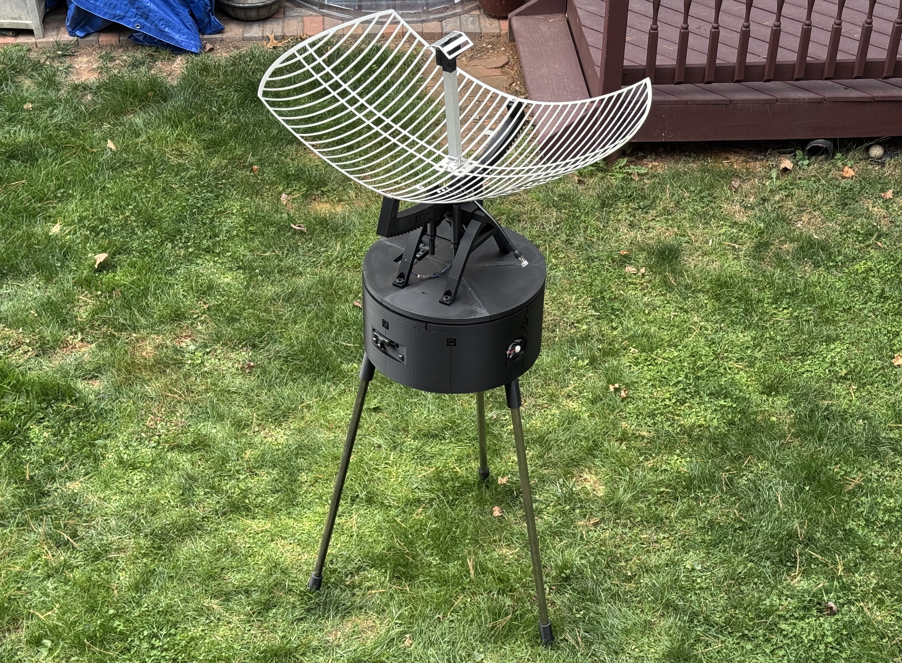
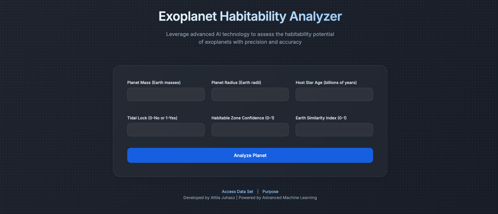
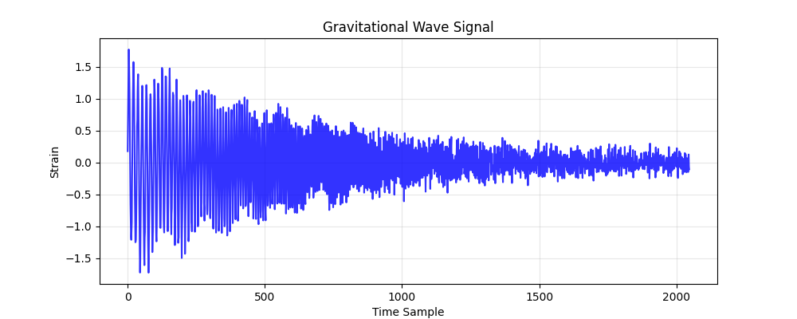

I developed and built a radio telescope using Fusion 360 CAD, Arduino-controlled electronics, and 3D-printed parts to observe radio emissions and map the Milky Way's 21 cm hydrogen line. I used an low-noise amplipher attached to the dish feeding into an RTL-SDR that lets me analyze the singals coming from space and record them to create a map of the Milky Way. I've finished the telescope and now I am currently collecting the data to create a full map.

This Python machine learning program predicts the habitability of exoplanets based on characteristics such as mass, radius, and host star age. This was one of my first ML projects, learning how to train models using Random Forest to predict novel data.

My gravitational wave detection and analysis program allows the user to analyze signals from LIGO and Virgo observatories by simply uploading detect gravitational wave data and running the script. I used Random Forest classification, Fast Fourier Transforms, and spectral feature extraction.